La adaptación cinematográfica de Harry Potter y la piedra filosofal fue la primera adaptación al cine de
la serie de Harry Potter
estrenada en 2001.
Está protagonizada por Daniel Radcliffe como Harry Potter, Rupert Grint como Ron Weasley,
y Emma Watson como Hermione Granger, y fue dirigida por
Chris Columbus
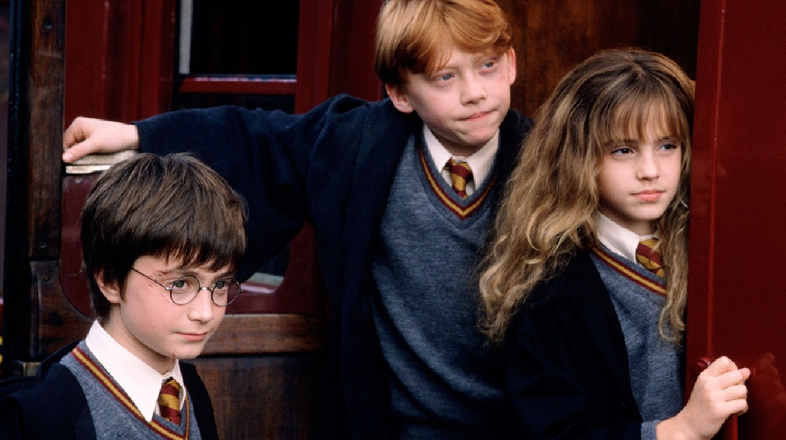
Sinopsis
Harry Potter es un huérfano que vive con sus desagradables tíos, los Dursley, y su repelente primo
Dudley.
Se acerca a su undécimo cumpleaños y tiene pocas esperanzas de recibir algún regalo, ya que nunca nadie
se acuerda de él.
Sin embargo, pocos días antes de su cumpleaños, una serie de misteriosas cartas dirigidas a él y
escritas con una estridente
tinta verde rompen la monotonía de su vida: Harry es un mago y sus padres también lo eran, esto fascina
a Harry ya que se da
cuenta de este gran secreto. Dolido con sus tíos por haberle ocultado sus orígenes y en vista de que
el mundo normal
no le ofrece grandes oportunidades, Harry acepta ir a Hogwarts. Allí conocerá a los que serán sus
grandes amigos,
Hermione Granger y Ron Weasley. Junto a sus nuevos amigos, vivirá una fabulosa aventura que supera
con creces la más desbordante imaginación.
Harry Potter y la camara secreta
«Algo maligno ha vuelto a Hogwarts» —Lema oficial
La versión cinematográfica de Harry Potter y la cámara secreta se basa en el segundo libro de la serie,
Harry Potter y la cámara secreta.
Fue dirigida por Chris Columbus y Steve Kloves fue el guionista.
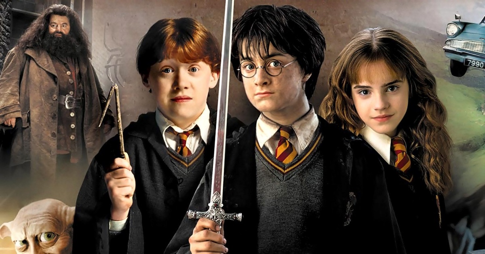
Sinopsis
Tras derrotar una vez más a Lord Voldemort, su siniestro enemigo en Harry Potter y la Piedra Filosofal,
Harry espera
impaciente en casa de sus insoportables tíos el inicio del segundo curso del Colegio Hogwarts de Magia y
Hechicería.
Sin embargo, la espera dura poco, pues un elfo aparece en su habitación y le advierte que una amenaza
mortal se
cierne sobre la escuela. Así pues, Harry no se lo piensa dos veces y, acompañado de Ron, su mejor amigo,
se dirige
a Hogwarts en un coche volador. Pero, ¿puede un aprendiz de mago defender la escuela de los malvados que
pretenden
destruirla?
Sin saber que alguien ha abierto la Cámara Secreta, dejando escapar una serie de monstruos peligrosos,
Harry y sus amigos Ron y Hermione tendrán que enfrentarse a arañas gigantes, serpientes encantadas,
fantasmas enfurecidos y, sobre todo, a la mismísima reencarnación de su más temible adversario.
Harry Potter y el prisionero de Azkaban
«Todo va a cambiar» —Lema oficial
La adaptación cinematográfica de Harry Potter y el prisionero de Azkaban incluye la trama básica del
libro, sin embargo,
la historia se centra también en las dificultades de la adolescencia.
Fue dirigida por Alfonso Cuarón y producida por David Heyman, Chris Columbus, director de las dos
primeras películas, y Mark Radcliffe.
Fue la primera película en la que se utiliza la tecnología IMAX sólo en cines IMAX.
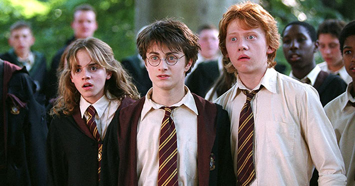
Sinopsis
Por la cicatriz que lleva en la frente, sabemos que Harry Potter no es un niño como los demás, sino el
héroe que venció a Lord Voldemort,
el más temible y maligno mago de todos los tiempos y culpable de la muerte de los padres de Harry.
Desde entonces, Harry no tiene más remedio que vivir con sus pesados tíos y su insoportable primo
Dudley, todos ellos muggles, o sea,
personas no magas, que desprecian a su sobrino debido a sus poderes.
Igual que en las dos primeras partes de la serie Harry aguarda con impaciencia el inicio del tercer
curso en el Colegio Hogwarts
de Magia y Hechicería.
Tras haber cumplido los trece años, solo y lejos de sus amigos de
Hogwarts,
Harry se pelea con su bigotuda
tía Marge, a la que convierte en globo, y debe huir en un autobús mágico.
Mientras tanto, de la prisión de Azkaban se ha escapado un terrible villano, Sirius Black, un asesino en
serie con poderes mágicos
que fue cómplice de Lord Voldemort y que parece dispuesto a eliminar a Harry del mapa. Y por si esto
fuera poco, Harry deberá
enfrentarse también a unos terribles monstruos, los dementores, seres abominables capaces de robarles la
felicidad a los magos y
borrar todo recuerdo hermoso de aquellos que osan mirarlos.
Lo que ninguno de estos malvados personajes sabe es que Harry, con la ayuda de sus fieles amigos Ron y
Hermione, es capaz de todo
y mucho más.
Harry Potter y el caliz de fuego
«Vienen tiempos oscuros y difíciles» —Lema oficial
La versión cinematográfica de Harry Potter y el cáliz de fuego fue estrenada el 18 de noviembre de 2005.
Está dirigida por Mike Newell. Patrick Doyle compuso la música de la película.
La película está protagonizada por los adolescentes Emma Watson como Hermione Granger, Rupert Grint como
Ron Weasley
y Daniel Radcliffe en el papel principal como Harry Potter.
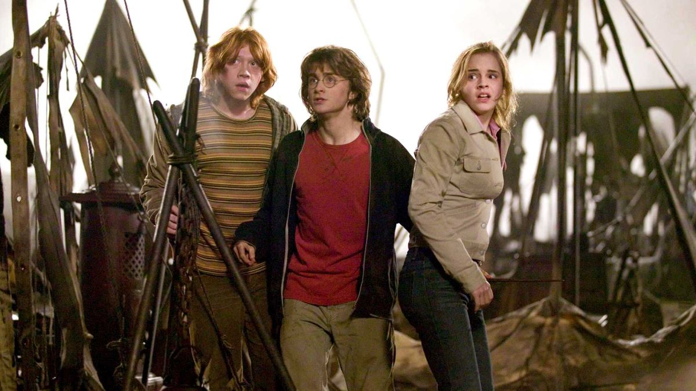
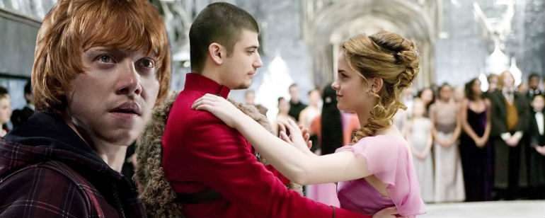
Sinopsis
A sus catorce años, a Harry le gustaría ser un joven mago como los demás y dedicarse a aprender nuevos
sortilegios,
encontrarse con sus amigos Ron y Hermione y asistir con ellos a los Mundiales de Quidditch.
Sin embargo, al llegar
al colegio le espera una gran sorpresa que lo obligará a enfrentarse a los desafíos más temibles de toda
su vida.
Si logra superarlos, habrá demostrado que ya no es un niño y que está preparado para vivir las nuevas y
emocionantes experiencias que el futuro le espera.
Harry Potter y la orden del fenix
«¡Comienza la rebelión!» —Lema oficial
La adaptación cinematográfica de Harry Potter y la Orden del Fénix fue estrenada el 11 de julio de 2007
y
está basada en Harry Potter y la Orden del Fénix.
Fue dirigida por David Yates y el guión fue escrito por Michael Goldenberg.
Está clasificado como PG-13. Con esta película es la primera vez que se utiliza IMAX 3D en los cines
IMAX 3D.
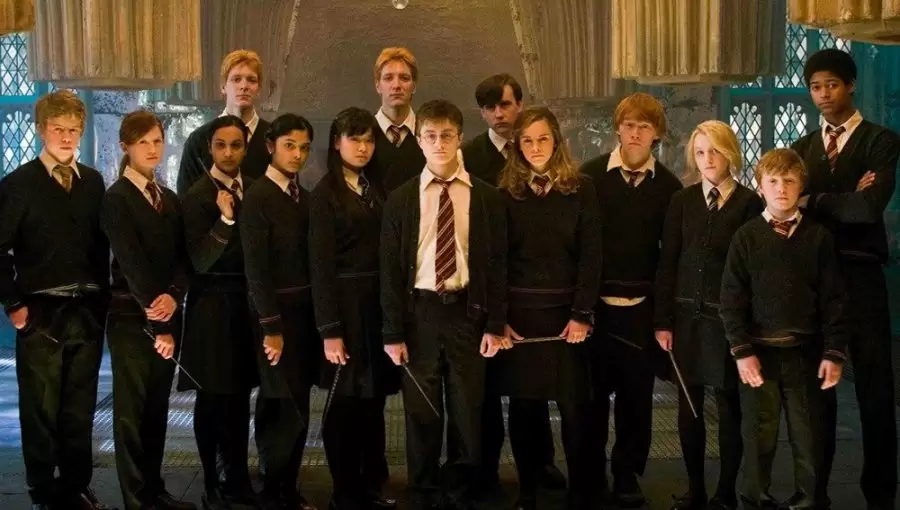
Sinopsis
Lord Voldemort ha regresado, pero el Ministerio de la Magia está haciendo todo lo posible para evitar
que el mundo de
los magos se entere de la verdad - incluso de que designaron a la funcionaria de Ministerio Dolores
Umbridge
como nueva profesora de Defensa Contra las Artes Oscuras en Hogwarts.
Cuando Umbridge se niega a enseñar práctica de magia defensiva, Ron y Hermione convencen a Harry de
entrenar en secreto a
un grupo selecto de alumnos para la guerra de magos que se avecina.
Un enfrentamiento aterrador entre el bien y el mal los espera.
Harry Potter y el misterio del principe
«Oscuros secretos serán revelados» —Lema oficial
Harry Potter y el misterio del príncipe es una película estrenada en 2009, basada en la sexta novela de
JK Rowling.
Es la sexta película de la serie de películas de Harry Potter. David Yates, el director de la quinta
película, Harry Potter
y la Orden del Fénix, la dirige. David Heyman y David Barron son los productores, y Steve Kloves, aunque
no escribió la quinta película,
ha vuelto como guionista de esta entrega. La filmación comenzó el 24 de septiembre de 2007.
La película fue lanzada en el Reino Unido, Canadá y EE.UU. en teatros el 15 de julio de 2009
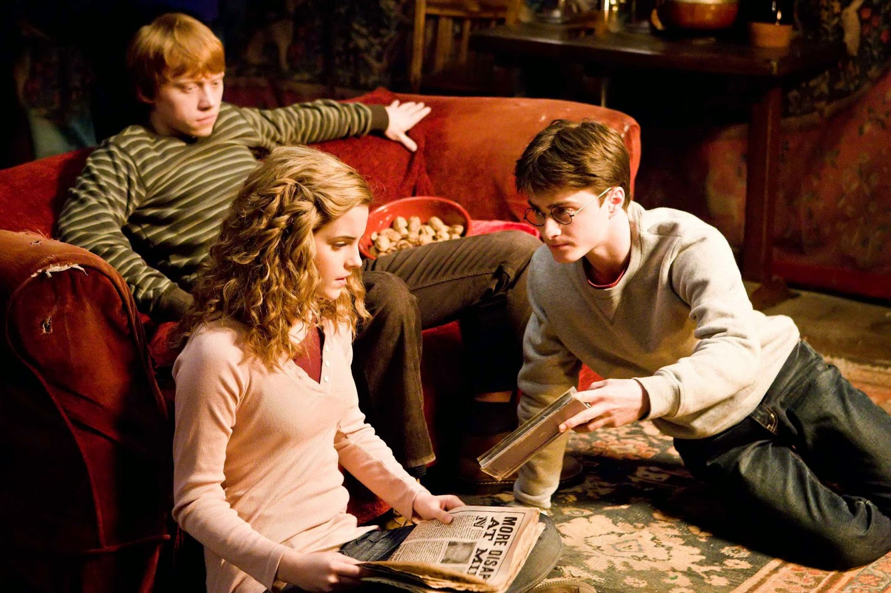
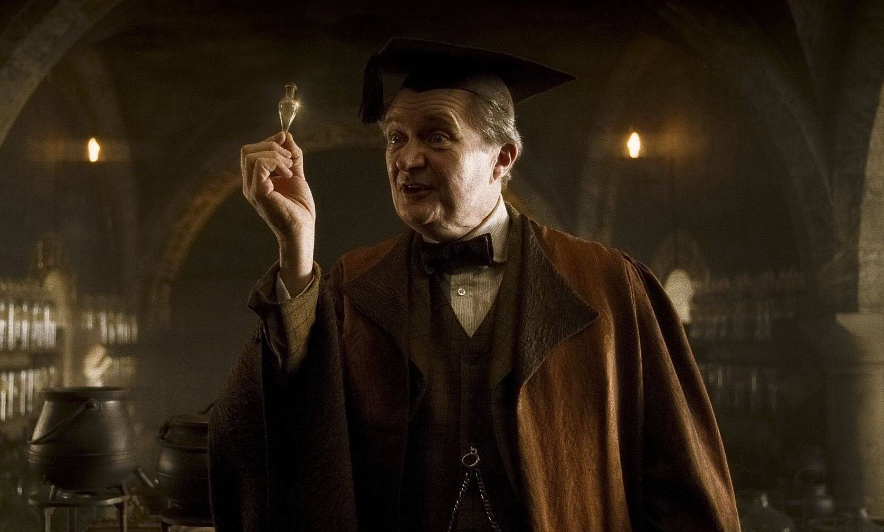
Sinopsis
Voldemort va tomando control tanto del mundo Muggle como del mundo de la magia, y Hogwarts ya no es el
lugar seguro que solía ser.
Harry sospecha que tal vez hasta el castillo sea peligroso. Dumbledore sabe que la batalla final se
aproxima, y por eso quiere
a Harry. Con ese fin, Dumbledore busca la ayuda de su viejo amigo y colega, el profesor Horace Slughorn,
que
cree que tiene información
muy importante.
Entre tanto, entre las paredes de la escuela, los estudiantes se encuentran afectados por algo que
siempre ataca a los adolescentes:
las hormonas. Harry cada vez se siente más atraído por Ginny, pero eso también le pasa a Dean Thomas.
Por su parte, Lavender Brown ha decidido que Ron tiene que ser para ella, ¡lástima que no contó con los
chocolates de Romilda Vane!
Y también está Hermione, hirviendo de celos, pero decidida a no mostrar sus sentimientos.
Los romances florecen, pero uno de los estudiantes no se deja afectar por todo ello. El está decidido a
salirse con su plan,
si bien es un plan muy tenebroso.
El amor está por todos lados, pero la tragedia se cierne sobre Hogwarts, que tal vez ya nunca será como
antes.
Harry Potter y las reliquias de la muerte - Parte 1
«Ningún lugar es seguro» —Lema oficial
«Solo uno sobrevivirá» —2do Lema oficial
Harry Potter y las Reliquias de la Muerte: Parte 1 es la primera parte de la adaptación cinematográfica
del libro
Harry Potter y las Reliquias de la Muerte de la escritora J.K. Rowling.
David Yates dirigió ambas partes y Steve Kloves escribió el guión. Esta primera parte fue estrenada el
19 de
noviembre de 2010.
La producción de las dos partes fueron hechas al mismo tiempo, como si fueran una sola película.
La idea de crear dos partes estuvo presente en 2007, pero tomó seriedad cuando la huelga de guionistas
americanos
(2007-2008 Writers Guild of America strike) terminó y David Heyman fue capaz de hablar como Steve Kloves
y
tener el apoyo de JK Rowling.
El 12 de marzo de 2008 la Warner Bros. confirmó que la película iba a ser dividida en dos partes.
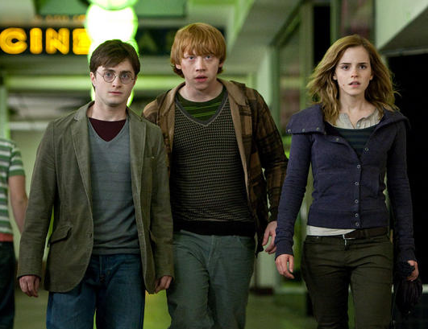
Sinopsis
Harry, Ron y Hermione se proponen seguir con la misión de encontrar y destruir el secreto de la
inmortalidad de Voldemort:
los Horrocruxes.
Sin contar con sus profesores y sin la protección de Dumbledore los tres amigos deber confiar en sí
mismos más que nunca.
Pero hay fuerzas oscuras en medio de ellos que amenazan con separarlos.
En su búsqueda, los tres amigos descubren una antigua y olvidada leyenda: la de las Reliquias de la
Muerte.
Y si esta resulta ser cierta, podría dar a Voldemort el máximo poder que busca.
Mientras tanto, Harry cada día está más cerca de enfrentar su destino y librar la última batalla contra
Voldemort.
Canción que suena en una parte de la película que se hizo muy popular
(Nick Cave & The Bad Seeds - O Children)
Harry Potter y las reliquias de la muerte - Parte 2
«Todo termina 7.15» —Lema oficial
Harry Potter y las Reliquias de la Muerte: Parte 2 es la segunda entrega de una película de dos partes,
basada en Harry Potter y las Reliquias de la Muerte de J.K.
Rowling, y la película final en la saga de Harry Potter.
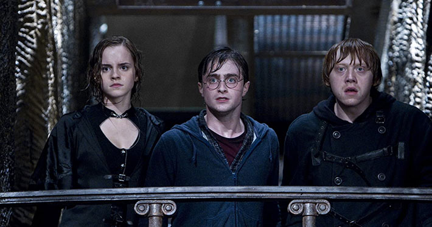
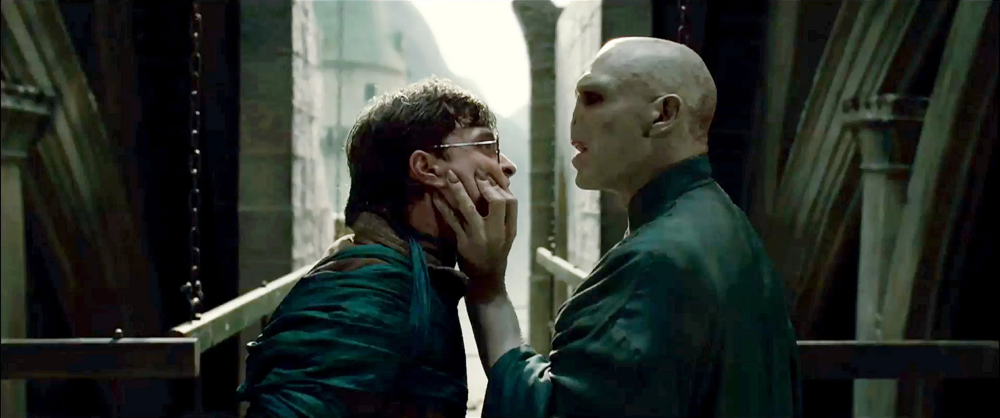
Sinopsis
En este final épico, la batalla entre las fuerzas del bien y del mal del mundo mágico se convierte en
una guerra a
la que nadie es indiferente. Nunca ha habido tanto en juego y nadie está a salvo.
Pero es Harry Potter quien puede que tenga que hacer el último sacrificio a medida que se va acercando a
su enfrentamiento definitivo con Lord Voldemort.